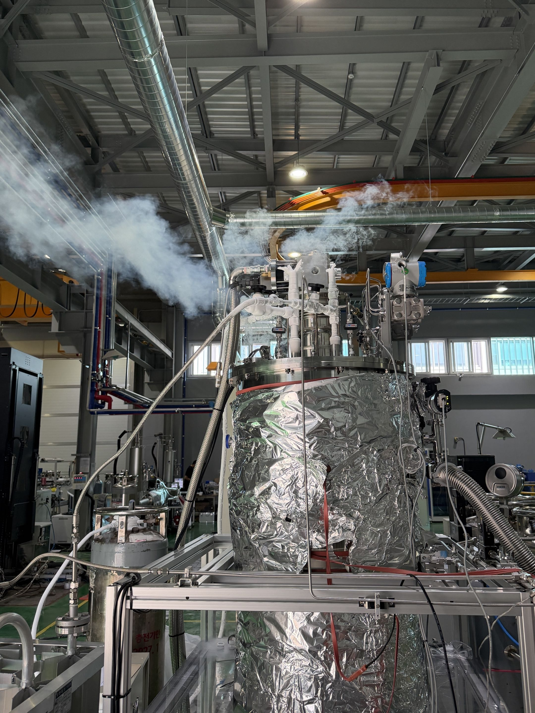
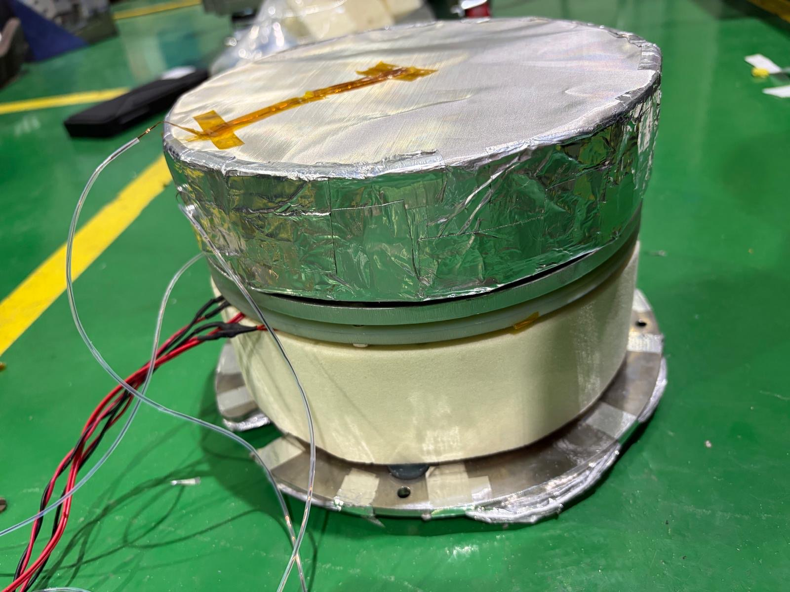
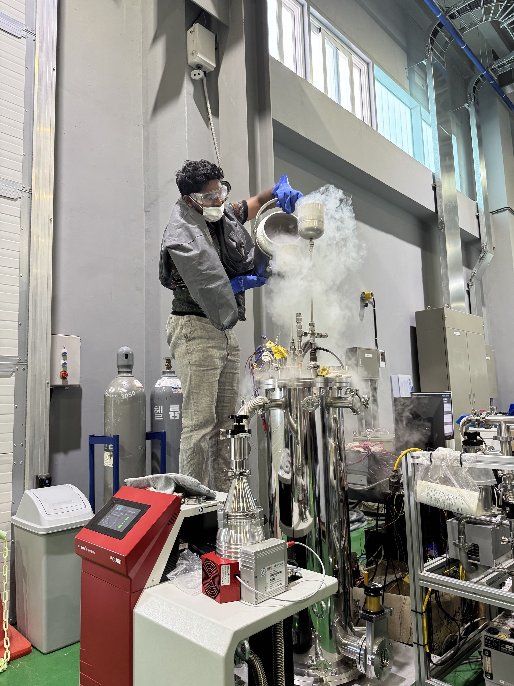
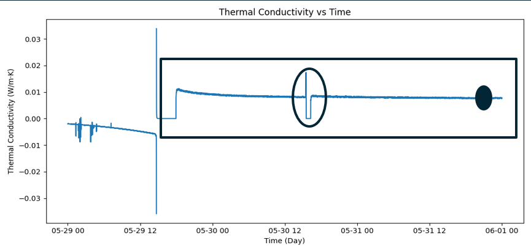
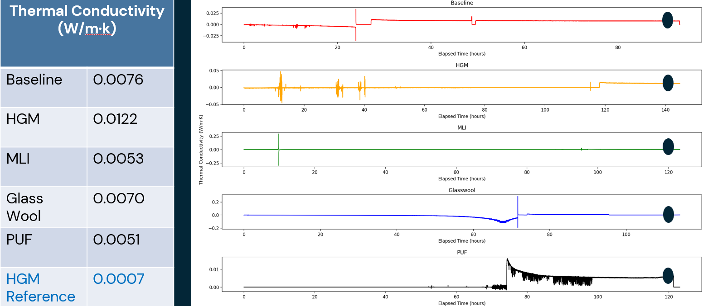

I spent the summer in the NSF-IRES program at the Hydrogen Ship Technology Center (HSTC) at Pusan National University in Busan, South Korea, conducting a 10-week research fellowship on liquid hydrogen (LH₂) storage and cryogenic insulation performance. The work centered on quantifying how well candidate insulation systems slow heat leak into cryogenic tanks — a problem directly tied to boil-off losses in LH₂ storage, rocket propellant tanks, and long-haul shipping and aerospace applications of hydrogen fuel.
My core project measured the effective thermal conductivity of K1 hollow glass microsphere (HGM) insulation systems at cryogenic boundary conditions, following ASTM C1774 methodology on a NASA Cryostat-100 boil-off calorimeter. I:
In parallel, I fabricated and instrumented multi-layer insulation blankets, including cutting and layering glass-fiber spacer and aluminum reflector sheets, assembling them onto the cryostat with low-outgassing tape, and instrumenting them with thermocouples, to reduce parasitic heat leakage into the measurement zone and supplement the primary specimen where its length fell short of the test chamber.

Manually pouring LN₂ into the apparatus during a cooldown cycle ahead of a boil-off run.

Vacuum-only condition, no specimen installed. With the Cryostat-100 itself wrapped in hand-fabricated MLI to suppress additional parasitic heat flux, the apparatus settled to a steady-state effective thermal conductivity of 0.0076 W/m·k 40% below the NASA reference value — showing the apparatus, as modified, outperforming NASA's own stock baseline before any specimen was tested.

With an actual specimen installed — K1 hollow glass microsphere (HGM), MLI, glass wool, and PUF — results ran higher than the NASA reference (0.0007 W/m·k) rather than matching it, pointing to parasitic conduction introduced by the specimen mounting itself. This gap is what motivated the proposed GFRP/polyurethane foam mount redesign.
| Parameter | Value |
|---|---|
| Test Standard | ASTM C1774 (Thermal Performance Testing of Cryogenic Insulation Systems) |
| Apparatus | NASA Cryostat-100 cylindrical boil-off calorimeter |
| Specimen Material | K1 hollow glass microsphere insulation (3M) |
| Cold Boundary Temperature | 77 K (LN₂) |
| Warm Boundary Temperature | ~290–293 K |
| Vacuum Level | 10⁻⁵ torr (turbo pump, bake-off + purge cycling) |
| Measurement Method | Boil-off flow rate → heat load (Q) → effective thermal conductivity (kₑ) |